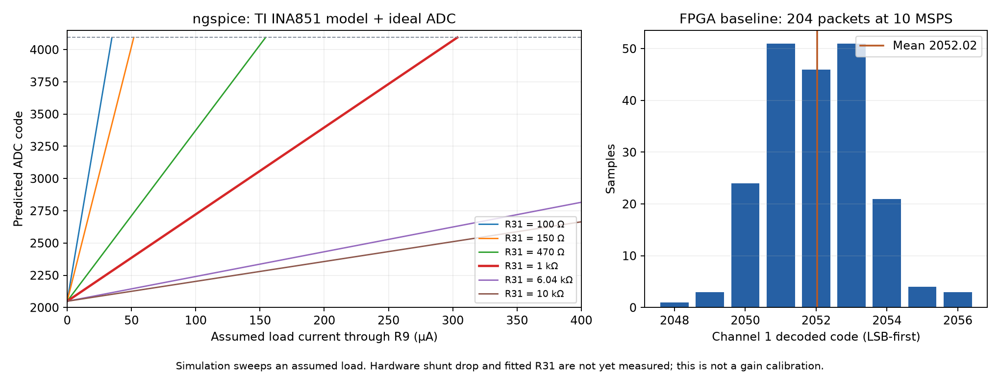

Archived assumed-470 Ω case. User confirmed R9 = 0.470 Ω. Do not apply these 470 Ω current conversions to the fitted board. Corrected report
Simulation completed; independent gain validation pending. The FPGA captured 204 complete packets at 10 MSPS. No FPGA bitstream or FMC electrical setting was changed during this comparison. The actual R9 voltage drop and fitted R31 remain unknown.
DAC81416 OUT0 / AQ1_C00 → R9 current pad 1 → 470 Ω shunt → R9 current pad 4 / VCC_READ → NT1 → Caravel mprj_io[33]. The four-terminal resistor is assumed to connect sense pad 2 to the source side and sense pad 3 to the load side internally.
R9.2 / AIN1_P → R33 (150 Ω) → U10.4 (IN+). R9.3 / AIN1_N → R34 (150 Ω) → U10.1 (IN−). U10.11/10 → R37/R38 (150 Ω) → AMP1_P/N → U14.1/2. OUT1_P/N route through FMC to the FPGA. All these routed connections passed the PCB design connectivity audit; this does not test solder joints.
U10 is INA851, powered from +12 V and −3VA, VOCM = ADCVCM ≈ 1.5 V, clamps 0/3.3 V. G02 pins are open: output-stage gain = 1. Only R31, between U10 pins 3 and 2, sets its input-stage gain.
G = 1 + 6000 / R31
Vshunt = V(AIN1_P) − V(AIN1_N) = I × 470
VADC,diff ≈ G × Vshunt
ADC code ≈ clip(2048 + 2048 × VADC,diff, 0, 4095)
At R31 = 1 kΩ, G = 7. One ADC count represents about 69.75 µV across R9, or 0.1484 µA, before offsets and gain errors. Changing the DAC voltage without a load need not produce a measurable shunt drop.
| R31 | Nominal gain | ngspice fitted gain | Ideal positive ADC full-scale current (µA) |
|---|---|---|---|
| 100 Ω | 61 | 61.003 | 34.88 |
| 150 Ω | 41 | 41.002 | 51.89 |
| 470 Ω | 13.77 | 13.767 | 154.56 |
| 1000 Ω | 7 | 7.0003 | 303.95 |
| 2000 Ω | 4 | 4.0002 | 531.91 |
| 6000 Ω | 2 | 2.0001 | 1063.83 |
| 6040 Ω | 1.993 | 1.9935 | 1067.36 |
| 10000 Ω | 1.6 | 1.6001 | 1329.79 |
| Open | 1 | 1 | 2127.66 |
Full-scale limits are ±1 V differential at the ADC. Values above 1064 µA also exceed the current available from an ideal 0.5 V source through 470 Ω into a passive grounded load. Open R31 gives gain ≈ 1; shorting it is not a valid gain selection.

Mean 2052.0245; range 2048–2056; standard deviation 1.416 counts. Every packet interval was 20 cycles of the 200 MHz capture clock, giving 10 MSPS. Return-clock flags and frame-lock stayed high.
Using the configured LSB-first interpretation, the mean is equivalent to 1.9651 mV at the ADC. If gain were exactly 7 and total offset zero, that would imply 0.2807 mV across R9 and 0.5973 µA. Those are conditional equivalents, not validated current measurements. ADS5282 offset specification is ±0.2% FS typical and ±1.25% FS maximum; a four-count departure from midscale cannot identify a bad gain resistor.
A 47 kΩ resistor from VCC_READ (R9.4) to PCB GND, with a nominal 0.50003 V DAC and no other load, produces 10.5336 µA and 4.9508 mV across R9. With R31 = 1 kΩ, the TI model predicts AMP1_P = 1.520174 V, AMP1_N = 1.485196 V, differential 34.9784 mV, ideal ADC code ≈ 2119.64. Model offsets are not the real board's offsets.
The useful check is the change from unloaded to loaded reading: approximately +70.97 counts at gain 7. Use the measured change in R9 drop if Caravel is also connected. Calculate Gmeas = (code_loaded − code_baseline) / (2048 × (Vshunt_loaded − Vshunt_baseline)), then R31 ≈ 6000 / (Gmeas − 1). A nonzero known-input test also checks the serial interpretation and polarity.
Requested measurements: R9.2 and R9.3 to ground, direct R9.2 (+) to R9.3 (−) in mV, actual load connection, and R31 fitted marking/value. Do not use resistance mode on a powered board.
ngspice 46 used TI's unmodified preliminary INA851 macro-model, PSpice compatibility, and 1 TΩ numerical shunts for convergence. The DAC is an ideal voltage source; ADS5282 is an ideal static conversion equation. ADC offsets/noise, sample-and-hold kickback and real resistor tolerances are not simulated. TI documents limitations in this model's clamp/range behavior, so those limits were checked from the data sheets rather than inferred from saturation plots.
The exported schematic has local /DAC/AIN1_P,N labels distinct from global AIN1_P,N. The current PCB connects the R9 sense pads to R33/R34; the simulation follows that routed PCB. The schematic's label inconsistency should be corrected before a future PCB update.
Sources: INA851 data sheet; TI INA851 model; ADS5282 data sheet; TI model limitations.